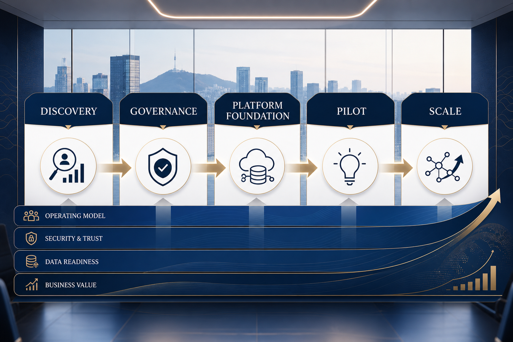
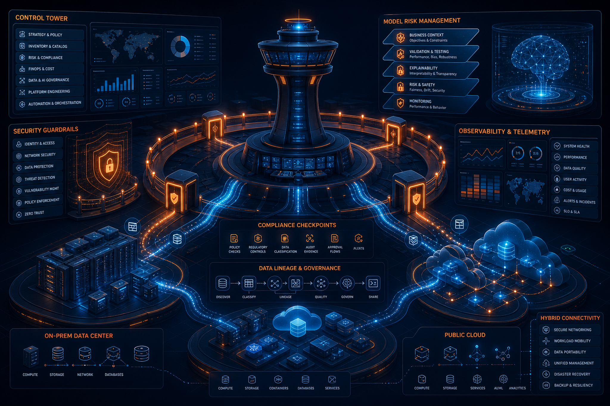

Amazon Bedrock introduces new advanced prompt optimization and migration tool
20260515_[News]Amazon Bedrock introduces new advanced prompt optimization and migration tool.md
원문 보기AWS 공식 블로그 6개 문서를 기반으로, 기술 발표를 한국 기업의 실행 전략·거버넌스·리스크 관점으로 재해석했습니다.
20260515_[News]Amazon Bedrock introduces new advanced prompt optimization and migration tool.md
원문 보기20260515_[Machine Learning]Improve bot accuracy with Amazon Lex Assisted NLU.md
원문 보기20260515_[Machine Learning]Real-time voice agents with Stream Vision Agents and Amazon Nova 2 Sonic.md
원문 보기20260515_[Machine Learning]From siloed data to unified insights Cross-account Athena Access for Amazon Quick.md
원문 보기20260515_[Machine Learning]Control where your AI agents can browse with Chrome enterprise policies on Amazon Bedrock.md
원문 보기20260514_[Korea Tech]Amazon ElastiCache for Valkey의 CESC로 Interactive AI 스토리텔링 플랫폼 최적화하기.md
원문 보기Amazon Q, Bedrock, SageMaker 계열 변화는 PoC 중심 AI에서 보안·권한·관측성을 포함한 운영형 AI로의 전환을 요구합니다.
분석·검색·레이크하우스·실시간 파이프라인은 AI 품질의 전제 조건입니다. 데이터 소유권, lineage, 품질 지표를 먼저 설계해야 합니다.
기업은 개별 서비스 도입보다 표준 Landing Zone, 배포 자동화, 비용 가시화, 보안 guardrail을 통합한 플랫폼을 구축해야 합니다.

| 영역 | 의미 | 권장 실행 | 한국 기업 체크포인트 |
|---|---|---|---|
| AI 애플리케이션 | 업무 프로세스 내 코파일럿/자동화 확산 | 권한·감사로그·프롬프트/응답 품질 기준을 포함한 AI 운영 표준 수립 | 개인정보, 내부문서 반출, 현업 승인 체계 |
| 데이터 플랫폼 | AI 성능은 데이터 접근성과 품질에 좌우 | 도메인별 데이터 제품, 카탈로그, lineage, 품질 SLA 정의 | 계열사/부서 간 데이터 소유권 조정 |
| 클라우드 운영 | 비용·보안·배포 속도의 균형 필요 | FinOps, 보안 guardrail, IaC, 관측성 통합 | 국내 규제, 리전 전략, DR/BCP 요구사항 |
학습/검색 데이터 출처, 민감정보 마스킹, hallucination 대응, 사용자 피드백 루프가 필요합니다.
생성형 AI와 데이터 처리 비용은 사용량 기반으로 급증할 수 있으므로 quota, budget alert, 단위 경제성 지표를 설계해야 합니다.
서비스별 도입이 누적되면 권한·네트워크·로그 표준이 깨질 수 있어 중앙 플랫폼 팀의 reference architecture가 필요합니다.

AI·데이터 use case 후보, 데이터 접근성, 보안 제약, 비용 기준선을 빠르게 진단합니다.
Landing Zone, IAM, 네트워크, 로그, 모델 사용 정책, 데이터 카탈로그 기준을 정리합니다.
고가치 use case 1–2개를 운영 지표와 함께 배포하고, 성공 패턴을 표준 템플릿으로 전환합니다.
A premium executive blog hero image about AWS enterprise AI, data platforms, and cloud modernization in Korea. Abstract cloud architecture, data streams, AI copilots, secure governance layers, warm AWS-inspired orange and deep navy palette, no logos, no readable text, high-end editorial technology illustration.A clean strategic roadmap visual for enterprise adoption of AWS generative AI and data cloud: discovery, governance, platform foundation, pilot, scale. Korean enterprise boardroom mood, abstract icons and flow, no brand logos, no small text, executive consulting style.A sophisticated cloud governance control tower illustration: security guardrails, compliance checkpoints, data lineage, model risk management, observability dashboards, hybrid cloud nodes. Dark navy background with orange highlights, no logos, no readable text.